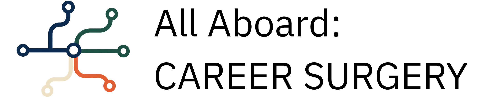

All Aboard:Career Surgery
Free, one-to-one time with an experienced professional — for anyone who hasn't had their first job yet.

Free, one-to-one time with an experienced professional — for anyone who hasn't had their first job yet.
AI has changed what a small, experienced team can do on its own. Work that used to go to someone starting out is now work an experienced person does directly, with a tool instead of a junior colleague.
That's good for people already in work. It's bad for people trying to get in. And it's bad for everyone eventually — today's experienced people were once beginners who got given real tasks to learn on. If that goes away, there is no one to teach the next generation of experienced people.

I use AI in my own work, and I benefit from it. That makes me part of the problem I've just described.
So I'm offering some time back. I can't offer a job — but I can try to help you with advice:
Who it's for
Anyone who hasn't had their first "adult job" yet.
I'll prioritise the people I think I can actually help. In practice, that means I'm most useful to people living in the UK with the legal right to work here, who wants to enter the transport sector — it's the market I know.
If that's not you, this probably isn't the right thing.
Have a look at my website, LinkedIn profile and Substack to learn more about what I do and whether it's relevant for you.
I'm a transport economist — ex-Department for Transport, Network Rail, Haskoning UK. This is a Pine Economics initiative; for now, I'm the one who answers the emails. I hope others will join me in the future
I expect you want a job — now, or soon.
I expect you've done some homework before you get in touch: roughly what's out there and what you might want to do.
It's fine not to be sure — I wasn't sure what I wanted to do even a few years after I started working. But you should ask yourself the question first.
If this works, the people I talk to get better at finding a first job, better at presenting themselves and their work, and better at putting a project or a piece of freelance work in front of someone who might pay for it.
Alongside the individual conversations, I'm keeping a record of the barriers people describe to me — not who they are, just what's getting in the way. Enough of that, collected honestly, might eventually be useful to more than one person at a time. No one is named or identifiable in it.
Tell me a bit about where you're at, and what you've already tried.